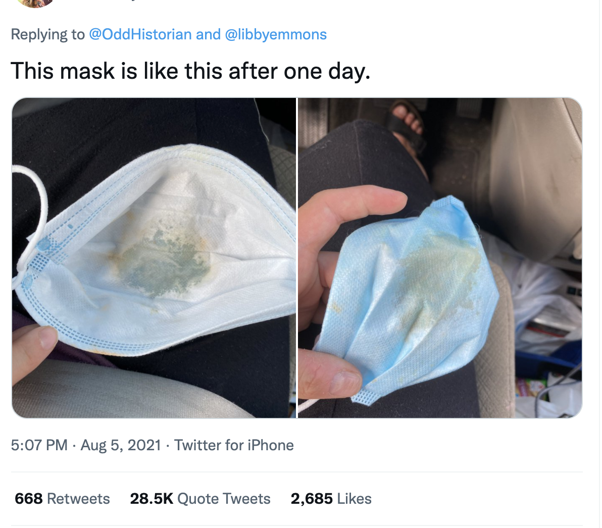

Intro
Cannot believe it's been another year, and time for another top five! It may be cliche, but how did this long year go by so fast? It was a busy, jammed packed catching up on 2020 missed plans and general life changes. Either way a riveting year to end our 20s.
I was inspired by your 2020 creative spin to put together something more memorable. After reviewing my twitter likes, multiple 'end of year' lists, and our imessage media tab, here are the best 2021 moments immortalized in a github repo. Also wanted to introduce a new end of year list, Main Moles.
Top Five
I could not decide the actual order of these, because besides the big boat, I hate all of them. So they are presented in chronological order.
January 6th
We didn't even get a week into 2021 without pepes, MAGA CHUDs, and the CIA 'attempting' to overthrow the government. I'm sure some journalist wrote about how the flimsy police barrier was a metaphor for our government's response to COVID. Though it's day of damage ended up being minimal, it's cultural impact was anything but. There were many memorable Photos from the day, but The Qshaman posing for a photo at Mike Pence's desk is the most iconic IMO. Proving again that most conservatives are failed theatre kids whose parent wouldn't take them on vacation.
Ted Cruz
"Ted Cruz travels to Mexico during a global pandemic while a freak winter storm ravages Texas" is the headline I would send to 2018 me. Lyin' Ted claimed he was merely escorting his daughters until the group chats leaked. Special thanks to Heidi's fake friends! At least he wore a mask, though ironic he'd rep the lone star flag while fleeing his duties.
Ever Given
I like big boats and I cannot lie. Especially when they get stuck in the Suez Canal for 6 days bringing parts of the global supply chain to a halt. This iconic photo of this little digger trying to dislodge a 200,000 ton boat with 18,000 shipping containers on it. The boat did get freed, and apparently was detained by the Egyptian government for 4 months?
Alec Baldwin

Oh boy. Alec Baldwin killing a crew member was a jarring enough story to process. Then this photo of him aftering being questioned by the sheriff came out to further immortalize this horrific moment. Truly a contrast to a more proper Alec we've seen. Honestly would of been a much bigger story if Travis Scott didn't one up him less than 2 weeks later.
Kyle
Who could forget this performance! So theatric Michael Tracey couldn't even buy it. But people who'd be fine killing 500 grandmas to go to the cheesecake factory lectured the rest of us for our lack of empathy. Weirdly, his face lacked any tears, puffiness, or redness that usually comes with crying. Strange...
Honorable Mentions

Main Moles
Going through all the source material, I realized a few characters kept popping up. Moles who escaped our mallet but showed up again and again. So though they were not worthy of the top five, they still got a place on the end of year list.
Nicki's Cousin's Friend
A great lesson in why you should never lie. A simple trinadadan man wanted to conceal his infidelity by blaming his STI that led to impotency and swollen balls on the vaccine. Unfortunately for him, his friend believed him and told others! Including his Cousin, International Rap Star Nicki Minaj. Who ran to twitter to share.
My cousin in Trinidad won’t get the vaccine cuz his friend got it & became impotent. His testicles became swollen. His friend was weeks away from getting married, now the girl called off the wedding. So just pray on it & make sure you’re comfortable with ur decision, not bullied
— Nicki Minaj (@NICKIMINAJ) September 13, 2021
This was my favorite twitter story of the year. It brought some great TL moments like the Barbz attacking Hasan, Eli's amazing cartoon, Nicki coming for Meghan McCain. The Trinidad health minister even had to make a public statement! Just goes to show one man's swollen balls can change the world. Or atleast become a funny meme for a few weeks.
Christian Walker
Hersel Walker's fame hungry son kept popping up every chance he could. Christian's lazy conserative takes + his constant need for attention might make him the dumbest of the grifters, but also the most harmless? Cause no one (except Glenn Greendwald) is taking christian at his word. His twitter feed reads like a Machine Learning algorithm trained on Rush Limbaugh transcripts that went through google translate and some race chaser's instagram page.
On my way to the mall… except I’m actually going to pay for my items, not loot it like BLM. pic.twitter.com/O4cAC9lUeb
— Christian Walker (@ChristianWalk1r) December 17, 2021
We will definitely be seeing more of christian during his daddy's senate run! Update: While I was working on this he got thirsty in Hasan's replies.
Meghan McCain's Hairstylist
The View must of hired a Former Viet Cong officer as a hairstylist cause that the only explanation for this torture. Or that Meghan is so unlikable no one can earnestly make this women look good. Either way, the TL was full of these perplexing hairstyles donned by the former view host. Meghan leaving was the end of some era, but at least we got this in the final act.
Kyrsten Sinema
The senate's favorite girl boss who'd rather work an unpaid internship at a winery than pass any legislation. She started the year strong with her cutesy thumbs down on a 15 dollar minimum wage and it was just downhill from there. Kirstin was there all year with her BFF Joe to scream 'Better things aren't possible.' Well, there's nothing more than a bisexual white woman loves more than attention.
Anti-Vaxxers

It truly was the anti-vaxxers' year! It's what the conservatives have always wanted, oppression! Though there were little societal consequences to not getting the vaccine (besides death), it didn't stop these pureblood crying about being excluded from society. Some contrarians would argue that these people are victims and they just haven't been reached out to enough. Which ignores the only admirable thing about these people, the conviction in their stance! If they know where to buy horse paste, they've already heard every argument about why they should get the vaccine. They've already been convinced just not to our side. Here’s to less of them in 2022!
US
Can't believe this photo was taken over 10 years ago! It's certainly been a strange and fun 10 years. those years passed through 10,000 photos, dozens of trips, 100s of twitter links, 100s of pages of your original writing. We've accomplished a lot since our first year at k and I'm glad we've remained friends through out. It's nice to have a friend as smart, quick-witted, and caring as you during these unprecedent times.